Outline
This research proposal will consist of the following:
- 2.1 Clean and Visualize Continuous Variables
- 2.2 Clean and Visualize Categorical Variables
- 2.3 Influence of Self Employment Status in Work Interference
- 2.4 Influence of Location in Work Interference
- 2.5 Influence of Time in Work Interference
- 2.6 Influence of Support in Work Interference
1. About the Dataset
OSMI Mental Health in Tech Survey 2016
Open Sourcing Mental Illness is a non-profit, 501(c)(3) corporation dedicated to raising awareness, educating, and providing resources to support mental wellness in the tech and open source communities.
This survey measures attitudes towards mental health in the tech workplace, and examines the frequency of mental health disorders among tech workers.
https://www.kaggle.com/osmi/mental-health-in-tech-survey
2. Exploratory Data Analysis
1import pandas as pd2import numpy as np3import statistics as stat4import matplotlib.pyplot as plt5import seaborn as sns6import warnings7# Suppress annoying harmless error.8warnings.filterwarnings(action="ignore")9%matplotlib inlinex
1data = pd.read_csv('../input/survey.csv')xxxxxxxxxx21# How many datapoints, how many variables?2data.shapexxxxxxxxxx11(1259, 27)
xxxxxxxxxx31# What variables do we have?2pd.options.display.max_columns = 303data.head()| Timestamp | Age | Gender | Country | state | self_employed | family_history | treatment | work_interfere | no_employees | remote_work | tech_company | benefits | care_options | wellness_program | seek_help | anonymity | leave | mental_health_consequence | phys_health_consequence | coworkers | supervisor | mental_health_interview | phys_health_interview | mental_vs_physical | obs_consequence | comments | |
|---|---|---|---|---|---|---|---|---|---|---|---|---|---|---|---|---|---|---|---|---|---|---|---|---|---|---|---|
| 0 | 2014-08-27 11:29:31 | 37 | Female | United States | IL | NaN | No | Yes | Often | 6-25 | No | Yes | Yes | Not sure | No | Yes | Yes | Somewhat easy | No | No | Some of them | Yes | No | Maybe | Yes | No | NaN |
| 1 | 2014-08-27 11:29:37 | 44 | M | United States | IN | NaN | No | No | Rarely | More than 1000 | No | No | Don't know | No | Don't know | Don't know | Don't know | Don't know | Maybe | No | No | No | No | No | Don't know | No | NaN |
| 2 | 2014-08-27 11:29:44 | 32 | Male | Canada | NaN | NaN | No | No | Rarely | 6-25 | No | Yes | No | No | No | No | Don't know | Somewhat difficult | No | No | Yes | Yes | Yes | Yes | No | No | NaN |
| 3 | 2014-08-27 11:29:46 | 31 | Male | United Kingdom | NaN | NaN | Yes | Yes | Often | 26-100 | No | Yes | No | Yes | No | No | No | Somewhat difficult | Yes | Yes | Some of them | No | Maybe | Maybe | No | Yes | NaN |
| 4 | 2014-08-27 11:30:22 | 31 | Male | United States | TX | NaN | No | No | Never | 100-500 | Yes | Yes | Yes | No | Don't know | Don't know | Don't know | Don't know | No | No | Some of them | Yes | Yes | Yes | Don't know | No | NaN |
xxxxxxxxxx21# Check for missing values2data.info()xxxxxxxxxx321<class 'pandas.core.frame.DataFrame'>2RangeIndex: 1259 entries, 0 to 12583Data columns (total 27 columns):4Timestamp 1259 non-null object5Age 1259 non-null int646Gender 1259 non-null object7Country 1259 non-null object8state 744 non-null object9self_employed 1241 non-null object10family_history 1259 non-null object11treatment 1259 non-null object12work_interfere 995 non-null object13no_employees 1259 non-null object14remote_work 1259 non-null object15tech_company 1259 non-null object16benefits 1259 non-null object17care_options 1259 non-null object18wellness_program 1259 non-null object19seek_help 1259 non-null object20anonymity 1259 non-null object21leave 1259 non-null object22mental_health_consequence 1259 non-null object23phys_health_consequence 1259 non-null object24coworkers 1259 non-null object25supervisor 1259 non-null object26mental_health_interview 1259 non-null object27phys_health_interview 1259 non-null object28mental_vs_physical 1259 non-null object29obs_consequence 1259 non-null object30comments 164 non-null object31dtypes: int64(1), object(26)32memory usage: 137.7+ KB
Everything seems very complete except for state, work_interfere and comments. Well keep them because the dataset is very small as it is.
xxxxxxxxxx21#data.drop('Timestamp',axis=1,inplace=True)2data.shapexxxxxxxxxx11(1259, 27)
2.1. Clean and Visualize Continuous Variables
Age is our only continuous variable. Lets clean it and get a statistical summary.
xxxxxxxxxx111# Replace noise with the mean age.2data.Age[data.Age < 15] = 323data.Age[data.Age > 100] = 324# Get a statistical summary, median age and histogram.6print(data.Age.describe())7print('median: ', np.median(data.Age))8sns.set(style="darkgrid")10data.Age.plot(kind='hist')11plt.show()xxxxxxxxxx101count 1259.0000002mean 32.0762513std 7.2650634min 18.000000525% 27.000000650% 31.000000775% 36.0000008max 72.0000009Name: Age, dtype: float6410median: 31.0
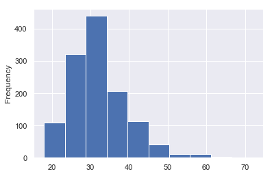
Takeaway: Most people in this survey are in their early 30s and late 20s.
Lets visualize the distribution of Age, by the categories of work_interfere.
But first, we should clean work_interfere.
2.1.1. Clean work_interfere Variable
This variable is the answer to the question: If you have a mental health issue, do you feel that it interferes with your work?
We could hypothesize that tech workers job performance is less affected if they feel safe talking about mental health issues at work; or if their employers actually offer mental health services.
We can also assume that people who didnt respond do not have a mental health issue. Many values are missing in this variable. Perhaps its best to keep them for now, and fill them up.
xxxxxxxxxx21data.work_interfere.fillna(value='No Issue',inplace=True)2data.work_interfere.value_counts()xxxxxxxxxx61Sometimes 4652No Issue 2643Never 2134Rarely 1735Often 1446Name: work_interfere, dtype: int64
2.1.2. Age Distribution by work_interfere
Now that both variables are clean, lets go ahead and see what they can reveal.
xxxxxxxxxx111sns.set(style="darkgrid")2g = sns.FacetGrid(col='work_interfere', sharey=True,4 col_order=['No Issue','Never','Rarely','Sometimes','Often'],5 data=data,despine=True)6g = g.map(plt.hist, 'Age', bins=np.arange(18,72,5))8g = g.set_ylabels('Counts')10plt.show()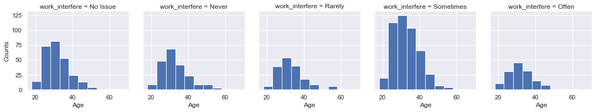
Takeaway: The majority of respondents with mental health issues said that they interfered sometimes with their work. However, there are almost no differences in the age distributions between different work_interfere categories. They all show signs of central tendency at around 32 years of age.
Maybe Gender could tell us more. But first lets clean it.
2.2. Clean and Visualize Categorical Variables
2.2.1. Clean Gender Variable
Gender is a very important variable here because its very possible that the effects of mental health vary by gender. We also dont have that much data so we cant afford to drop the noisy values. Well try to do some cleaning.
xxxxxxxxxx21# Let's get a view of all the unique gender raw values.2data.Gender.value_counts()xxxxxxxxxx501Male 6152male 2063Female 1214M 1165female 626F 387m 348f 159Make 410Woman 311Male 312Female 213Man 214Female (trans) 215Cis Male 216Malr 117Trans woman 118Nah 119Guy (-ish) ^_^ 120p 121Mail 122Neuter 123male leaning androgynous 124queer/she/they 125Agender 126msle 127Enby 128ostensibly male, unsure what that really means 129cis male 130A little about you 131Female (cis) 132Male-ish 133Androgyne 134Genderqueer 135All 136woman 137fluid 138femail 139non-binary 140Femake 141Cis Female 142something kinda male? 143queer 144Cis Man 145Mal 146maile 147cis-female/femme 148Trans-female 149Male (CIS) 150Name: Gender, dtype: int64
Takeaway: There are many variations of male and female, plus a few gender-non-conforming respondents. If we had sufficient data for statistical purposes I could create categories for several gender-non-conforming respondents, but unfortunately because of their scarcity it makes more sense to re-code everything to the binary confines.
xxxxxxxxxx61# If it contains an 'f' or a 'w', then turn into 'F'2data.Gender[data.Gender.apply(lambda x: 'f' in str.lower(x))] = 'F'3data.Gender[data.Gender.apply(lambda x: 'w' in str.lower(x))] = 'F'4# Else, turn into 'M'6data.Gender[data.Gender != 'F'] = 'M'xxxxxxxxxx21# How many men and women do we have after cleaning?2data.Gender.value_counts()xxxxxxxxxx31M 10062F 2533Name: Gender, dtype: int64
Takeaway: We have more men than women in this survey. But maybe thats a reflection of the tech industry anyway. That leads to another question:
How many of those men and women actually work in tech companies?
So far weve cleaned Age and Gender, and re-coded work_interfere. Now we can explore how they all relate to each other, plus whether the respondents work in a tech_company.
2.2.2. Visualizations between Gender, tech_company, work_interfere and Age
Gender could be compared with several other variables to better understand the sample. For example, tech_company represents whether the respondent works in a tech company or not. Next well explore the importance of Gender and tech_company on work_interfere. But first, lets count our data points.
Counting Men and Women by tech_company
xxxxxxxxxx81sns.set(style="darkgrid")2g = sns.catplot(col='tech_company', x='Gender', data=data, 4 kind='count', sharey=False, height=3)5g.set_axis_labels('Men/Women')7plt.show()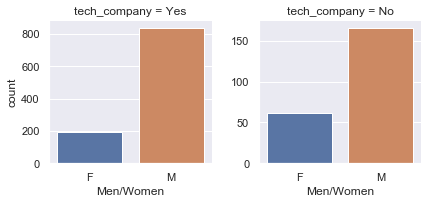
Takeaway: Its evident theres a lower ratio of women compared to men in the respondents who worked at tech companies.
Now, what relations exist between Gender, tech_company and work_interfere?
xxxxxxxxxx71sns.set(style="darkgrid")2g = sns.catplot(hue='work_interfere', x='Gender', col='tech_company', kind='count', 4 data=data, hue_order=['No Issue','Never','Rarely','Sometimes','Often'],5 sharey=False)6g = g.set_axis_labels('Count of "Work Interfere" by "Gender"')7plt.show()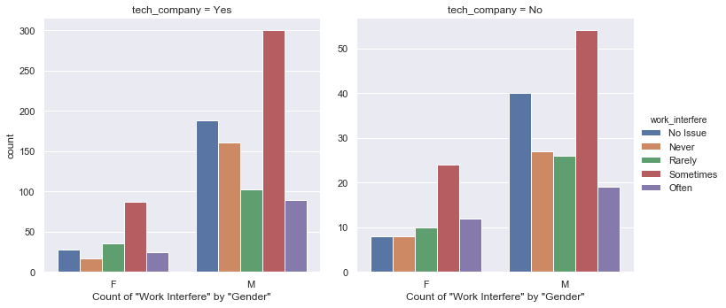
Takeaway: work_interfere for men seems to stay equally distributed regardless of tech_company. Women seem to be affected differently with tech_company, but the number of data points is too small to make serious conclusions. Theres only about 60 women respondents who dont work at tech companies.
Lets now look at men vs womens work_interfere regardless of tech_company
xxxxxxxxxx61sns.set(style="darkgrid")2g = sns.catplot(x='work_interfere', col='Gender', kind='count', 3 data=data, order=['No Issue','Never','Rarely','Sometimes','Often'],4 sharey=False)5g = g.set_axis_labels('Count of "Work Interfere" by "Gender"')6plt.show()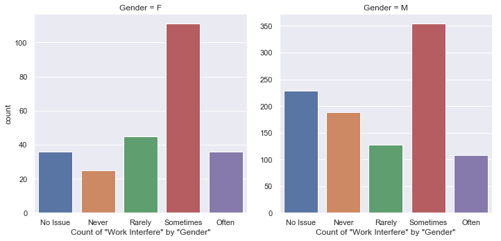
Takeaway: Men and women appear equally likely to be Sometimes affected at work by their mental health issue, but men appear more likely to have No Issue at all or to Never be affected by it.
Earlier in the analysis we plotted the distributions of Age categorized by work_interfere facets, and found that the distributions were similar. What if Gender or tech_company paint a different Age picture?
Age of Work-Interference by tech_company and Gender
xxxxxxxxxx71sns.set(style="darkgrid")2g = sns.catplot(kind='box', y='Age', col='tech_company', x='Gender',4 hue='work_interfere', data=data, 5 hue_order=['No Issue','Never','Rarely','Sometimes','Often'],6 height=7, aspect=0.7)7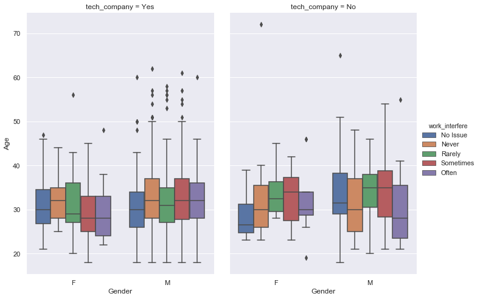
Takeaway: This is the most telling figure so far. It tells that women in tech companies are more likely to be affected at work by a mental health issue the younger they are. Men in tech on the contrary, are more likely to be affected the older they are.
And interestingly, men and women not in tech show the inverse pattern. Older women and younger men are more affected.
2.3. Influence of Self-Employment Status in Work Interference
So far our premise is that in tech workers there is a different relation between age and degree of work interference for men and for women. The next thing to explore is the influence of self-employment status in this dynamic.
xxxxxxxxxx51# Let's first inspect how many respondents are self-employed2g = sns.catplot(kind='count', col='tech_company', x='Gender',3 hue='work_interfere', data=data, row='self_employed',4 hue_order=['No Issue','Never','Rarely','Sometimes','Often'],5 height=3, aspect=1.5, sharey=False, sharex=False)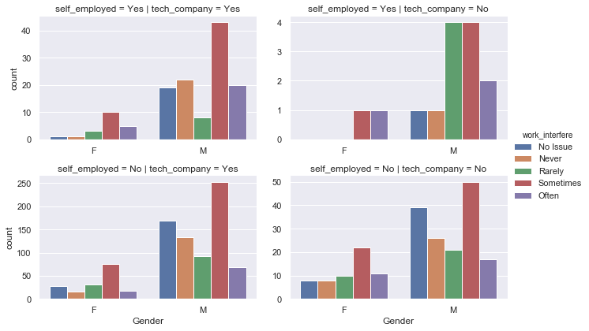
The top right facet is not trustworthy, the respondent counts are too low for both men and women entrepreneurs not in tech. However, we can compare the self-employed tech people (Top left) with the employe tech people (Lower left) in order to interpret the effects of being self-employed in tech. Also, the two lower facets allow us to compare tech and non-tech sectors.
Takeaways:
- Self-Employed. Theres too few non-tech entrepreneur respondents for statistical analysis. But if we trusted the visuals, across the board being self employed increases the chance of mental issues and work interference.
- Tech Sector for Employees. Being in a tech company doesnt influence work interference for men employees. Women employees seem slightly more mentally healthy if they are in the tech sector.
xxxxxxxxxx51# Let's isolate the respondents who are in the tech sector for the purposes of this figure.2dfplot = data[data.tech_company == 'Yes']3g = sns.catplot(kind='count', col='self_employed', x='work_interfere', row='Gender',4 data=dfplot, order=['No Issue','Never','Rarely','Sometimes','Often'],5 height=3, aspect=2, sharey=False)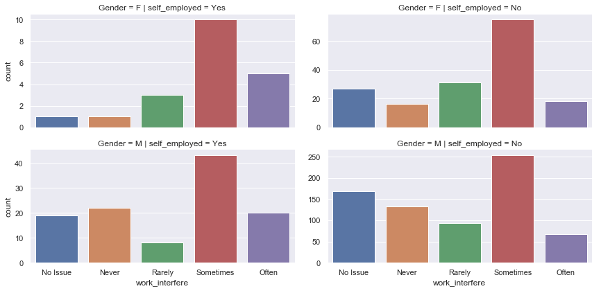
Here the first row is for women, the 2nd for men. The first column for self-employed, the second column for employees. This allows us to compare the effects of self-employed in the distribution of work-interfere, separately for men and women.
Takeaway: Men employees in tech are more likely to be mentally healthy or unaffected at work compared to entrepreneurs.
Women entrepreneurs have a very small count, but show the same behavior.
2.3.1. Age Distribution by Self-Employment Status
xxxxxxxxxx41dfplot = data[data.tech_company == 'Yes']2g = sns.catplot(kind='boxen', y='Age',col='self_employed', x='Gender', hue='work_interfere',3 data=dfplot, hue_order=['No Issue','Never','Rarely','Sometimes','Often'],4 height=7, aspect=0.8, sharey=False)
Takeaway: Based on the figure above, being self-employed doesnt alter the central tendency of age for men and women in tech, divided by work-interference.
If anything, the scarcity of data for self-employed women in tech is causing a big deviation from the pattern seen on the right side. Perhaps with more data, these facets would look more similar.
Identifying Focus Groups: Since we first analyzed the age distribution of work-interfere values for men and women, we observed that men employees in tech struggle more as they age, whereas women employees in tech struggle more the younger they are. (Struggle here refers to the work interference of mental health issues). Discarding the data for self-employed individuals, this pattern still holds true as can be seen on the right side.
2.4. Influence of Location in Work Interference
2.4.1. Visualizing Work Interference by Country
xxxxxxxxxx111# Create a list of the 10 countries with most respondents2countries = data.Country.value_counts()[:10].index.tolist()3# Slice the data to include only the 10 countries with most respondents, tech, and employees only.5dfplot = data[data.Country.isin(countries)][data.tech_company == 'Yes'][data.self_employed == 'No']6g=sns.catplot(col='Country', x='work_interfere', kind='count', data=dfplot, col_wrap=4, sharey=False,8 sharex=False, height=4, aspect=1.2, col_order=countries, 9 order=['No Issue','Never','Rarely','Sometimes','Often'])10plt.show()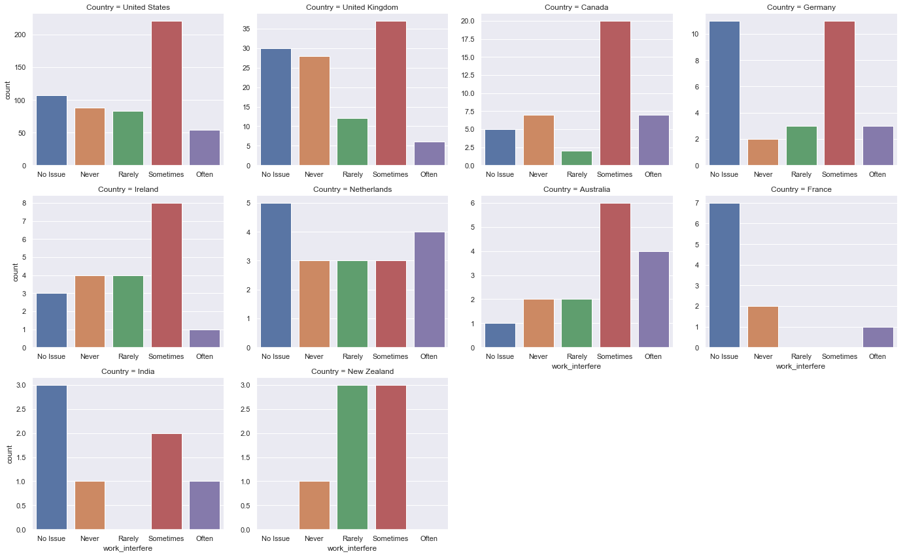
Takeaway: Dutch, French and Indian respondents seem to be the most mentally healthy at work. However, the data from these countries is too small not to rule out high standard errors. For the purposes of this analysis, lets only keep the data from the 5 most abundant countries.
2.4.2. Visualizing Work Interference by US State
xxxxxxxxxx111# Slice the data to include only the US, in order to plot by state2states = data.state.value_counts()[:10].index.tolist()3# Slice the data to include only the 10 states with most respondents, tech, and employees only.5dfplot = data[data.state.isin(states)][data.tech_company == 'Yes'][data.self_employed == 'No']6g=sns.catplot(col='state', x='work_interfere', kind='count', data=dfplot, col_wrap=4, sharey=False,8 sharex=False, height=4, aspect=1.2, col_order=states, 9 order=['No Issue','Never','Rarely','Sometimes','Often'])10plt.show()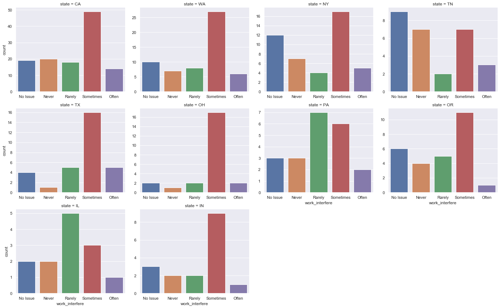
Takeaway: New York respondents seem too disproportionatelly with No-Issue, compared to California and Washington. Theres also less data from here so its not very relevant.
2.5. Influence of Time in Work Interference
Theres a possibility that seasonal changes had an impact on peoples work interference by mental health. Winters lack of sunlight is known for causing seasonal affective disorder (SAD). Lets investigate if this is plausible in this data.
xxxxxxxxxx21# Timestamps are currently formatted as strings. Convert them to pandas' time data.2data.Timestamp = pd.to_datetime(data.Timestamp)xxxxxxxxxx21# Statistical summary of time series2data.Timestamp.describe()xxxxxxxxxx71count 12592unique 12463top 2014-08-27 14:22:434freq 25first 2014-08-27 11:29:316last 2016-02-01 23:04:317Name: Timestamp, dtype: object
2.5.1. Visualize the Distribution of Date/Time for all responses
xxxxxxxxxx171# Let's put the dates in order2dfplot = data.sort_values(by='Timestamp')3# View the time distribution of raw data5dfplot.Timestamp.hist()6plt.title('Time Data Distribution- All')7plt.xticks(rotation=90)8plt.show()9# Slice a portion of the time series11dfplot = dfplot[dfplot.Timestamp < '2014-09-03']12# View the distribution of the slice14dfplot.Timestamp.hist()15plt.title('Time Data Distribution- First Week Only')16plt.xticks(rotation=90)17plt.show()
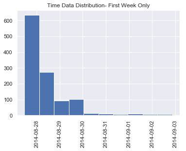
Takeaway: About 90% of the data was collected during the first week of the survey. This means we can rule out the possibility of seasonal affective disorders influencing peoples self-evaluations.
2.6. Influence of Support in Work Interference
So far weve only analyzed the demographic variables. This allows us to understand who is most affected by mental issues at work. But we havent explored the implications that specific actions, attitudes, or services have upon that outcome. This part of the analysis should help us identify methods of coping with mental issues at work.
xxxxxxxxxx91# Let's see the categories of each variable related to mental health services2categorical = data.loc[:,'benefits':'leave'].select_dtypes(include=['object'])3for i in categorical:4 column = categorical[i]5 print('\n'+ i.upper())6 print(column.value_counts())7 sns.countplot(data=categorical, x=column)8 plt.xticks(rotation=45)9 plt.show()xxxxxxxxxx51BENEFITS2Yes 4773Don't know 4084No 3745Name: benefits, dtype: int64
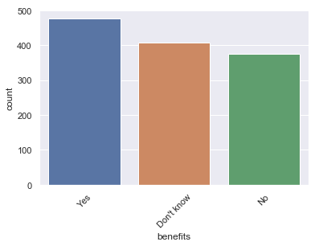
xxxxxxxxxx51CARE_OPTIONS2No 5013Yes 4444Not sure 3145Name: care_options, dtype: int64
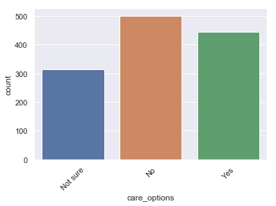
xxxxxxxxxx51WELLNESS_PROGRAM2No 8423Yes 2294Don't know 1885Name: wellness_program, dtype: int64
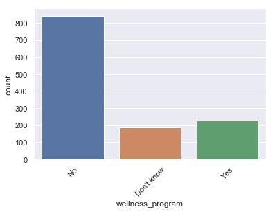
xxxxxxxxxx51SEEK_HELP2No 6463Don't know 3634Yes 2505Name: seek_help, dtype: int64
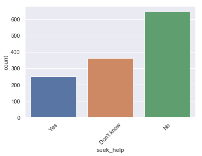
xxxxxxxxxx51ANONYMITY2Don't know 8193Yes 3754No 655Name: anonymity, dtype: int64
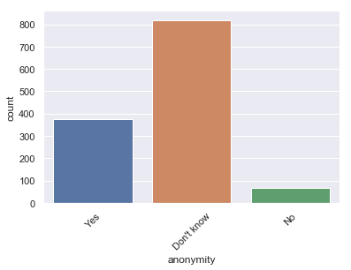
xxxxxxxxxx71LEAVE2Don't know 5633Somewhat easy 2664Very easy 2065Somewhat difficult 1266Very difficult 987Name: leave, dtype: int64
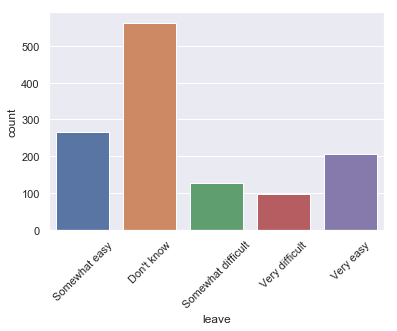
To clarify what these variables stand for:
- Benefits: Does your employer provide mental health benefits as part of healthcare coverage?
- Options: Do you know the options for mental health care available under your employer-provided coverage?
- Wellness-Program: Has your employer ever formally discussed mental health (for example, as part of a wellness campaign or other official communication)?
- Seek-Help: Does your employer offer resources to learn more about mental health concerns and options for seeking help?
- Anonymity: Is your anonymity protected if you choose to take advantage of mental health or substance abuse treatment resources provided by your employer?
- Leave: If a mental health issue prompted you to request a medical leave from work, asking for that leave would be...
2.6.1 Correlations with Work Interference:
For the purposes of this research proposal, we must isolate one variable to test on a treatment group. However, all of these variables could have some influence over a respondents self-assessed work_interfere answer. So lets determine which variable explains the most variance in work_interfere. This way we can be sure our experiment will have the most impact.
Well also add the variable family_history to the correlation matrix, which indicates if the respondent had a family history of mental health issues.
xxxxxxxxxx91# Define a subset of data including mental-care variables, plus 'work_interfere'2# and 'family_history'.3health = pd.concat([data.loc[:,'benefits':'leave'],data[['family_history','work_interfere']]],axis=1)5# Plot a correlation matrix, using dummies.7plt.figure(figsize=(10,8))8sns.heatmap(pd.get_dummies(health).corr(),square=True)9plt.show()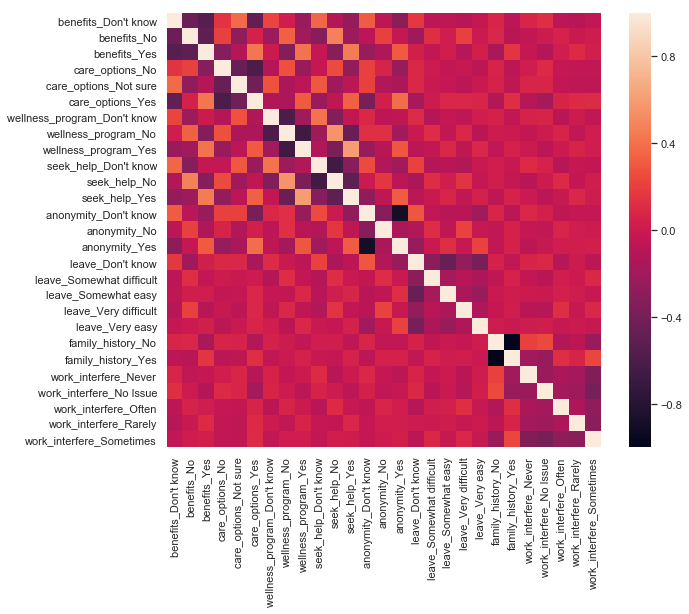
Takeaway: The feature work_interfere_often has its strongest correlation with the feature family_history_Yes and leave_Very difficult. This means that the people who had a family history of mental health where more likely to be Often affected at work if they felt it was Very difficult to take leave days.
xxxxxxxxxx101# Let's focus on the people with a family history of mental health.2subset = data[data.family_history=='Yes'][data.tech_company=='Yes'][data.self_employed=='No']3# let's look at the distributions of 'work_interfere', by 'leave' on the subset.5colorder = ["Don't know","Very easy","Somewhat easy","Somewhat difficult","Very difficult"]6xorder = ['No Issue','Never','Rarely','Sometimes','Often']7sns.catplot(data=subset, col='leave', x='work_interfere', kind='count',height=4,8 aspect=1, order=xorder, col_order=colorder, sharey=False)9plt.show()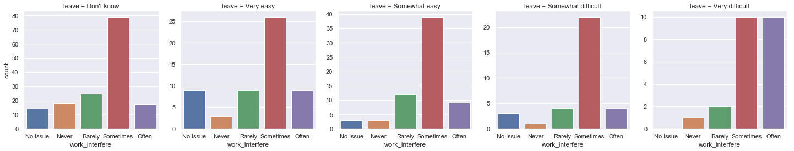
Takeaway: The largest Often is found at the far right, where people said it was Very difficult to leave. This plot strongly supports the argument that people with a family history of mental health are more likely to be affected at work if they lack the flexibility to take days off when needed.
3. Experimental Design
3.1. Problem
Mental health issues are an obstacle to productivity. Some people are affected more strongly than others. People with a family history of mental health issues are particularly vulnerable to severe work interference.
3.2. Solution
Some work conditions could mitigate work interference in vulnerable groups. Strict leave policies were highly correlated with the most work interference (Often) for the respondents of this dataset. Therefore the reverse could lead to a reduction in severe work interference in those with a family history of mental health issues.
3.3. Hypothesis
Less tech employees with a family history of mental issues would suffer severe work interference if they had access to flexible leave policies. In experimental terms, if a more flexible leave policy were in place, vulnerable and affected individuals would show at least a 30% increase in productivity.
3.4. Sample Selection
Identify tech employees who have a family history of mental issues and said they are Often affected at work by mental issues. From this subset, two groups of 50 people will be chosen randomly. One will be our control group, one will be our treatment group.
3.5. Treatment
The treatment group will be offered a leave policy with improvements in flexibility as part of an official human resources campaign. The other will continue working as usual.
4. Rollout and Evaluation
4.1. Rollout Plan
The new leave policy will be communicated to the treatment group by a mental health counselor who will also perform a mental health screening. For a period of 5 weeks, the treatment will be applied to one member of the treatment group per day. Assumming 5 people per week receive the treatment, by the end of the fifth week 50% of the treatment group (25 total) will receive the treatment. Data will be collected for the coming 6 months after rollout began. Based on said data, the rollout could continue to the remainder 50%.
Rollout should begin at a time of year devoid of major holidays in the coming six months. This would make March the most ideal month to start the experiment. This will avoid halloween, new years eve and valentines day.
Six months after rollout began, the data collected will be used to determine the next step. If at that point weekly supervisor evaluations showed productivity levels 30% below those on the first week of the experiment, the rollout would come to a halt. Otherwise, rollout is to resume treatment to the remaining 50% of the group. Six months should be enough time to even out any temporal down fluctuations.
4.2. Evaluation Plan
Assessment would be made 1 year after the new leave policy was successfully communicated to all the members of the treatment group. This will avoid potential bias from seasonal factors.
4.2.1 Metrics
Primary Metric:
- Productivity, as assessed by a supervisor. This will avoid bias from self-assessments.
Side-note: The primary driver that led to this hypothesis was the self-assessed work_interfere variable from the survey. From a management perspective however, this variable has a tangible quality. Productivity on the other hand, is a measurable, continuous variable that also holds vital interest for business.
Secondary Metrics:
- Work interference, self-evalution. It could be insightful to compare data from supervisors vs data from self-assesments. Assessed at rollout start and one year afterwards.
- Mental health score assessed by mental health specialist. This gives us a 3rd perspective by which to judge the results. Assessed at rollout start and one year afterwards.
- Count of leave days taken. Assessed daily for the duration of the experiment. Well be able to identify if this treatment altered the regular rate of leave days taken. Itll also allow for controlling the rollout.
4.2.2. Success Criteria
At the end of the experiment the productivity levels of the treatment group will be compared with the control group. Our hypothesis is that the treatment group will have a mean productivity level 30% higher than the control group. A t-test will be performed to the mean productivity level of the treatment group VS that of the control group.
4.2.3. If P < 0.075:
Assume the differece to be significant and thus well believe our results.
- In this scenario, if the treatment group shows a productivity level 25% or higher, and leave days increased at least 5%, we conclude the experiment was successful. If leave days didnt increase more than 5%, assume something about the experiment wasnt conducted adequately.
- If it is in between 10 and 25% higher, analyze the secondary metrics. If mental score and self assessment both improved 15% or more, also conclude the experiment to be successful.
- Productivity less than 10% higher: If mental score and self-assessment both improved 15% or more, conclude that there is an external factor affecting productivity. Else, if mental score and self-assessment were less than 15% higher, assume the null hypothesis to be true. The variable leave had a weaker correlation than we estimated. Repeat the experiment using a different variable as treatment.
- Productivity lower than the control group: If mental score increased 10% or more, treatment improved mental health, but a lurking variable is impeding productivity. If mental score isnt more than 5% points different from control group, conclude that leave has no impact on productivity and therefore the null hypothesis is true.
4.2.4. If P > 0.075:
- Consider any difference between the groups to be likely the result of chance.
- Repeat the experiment selecting two different groups and improve the execution.